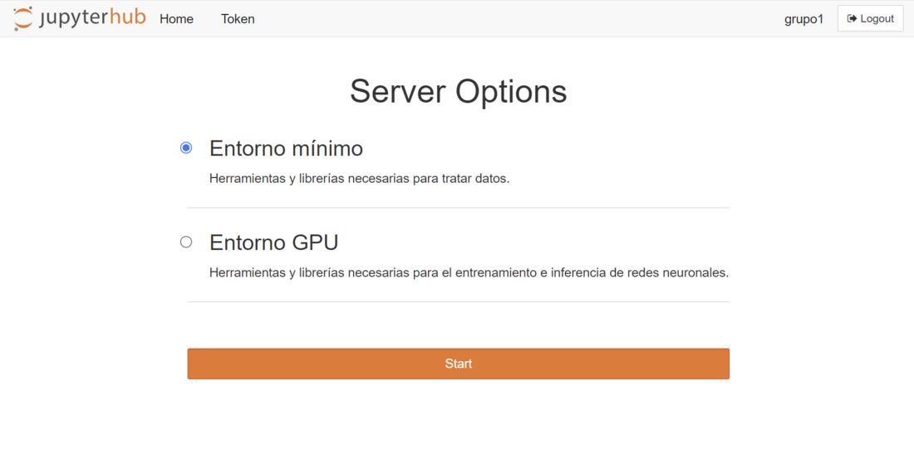

¿Qué es ICAVIR?
ICAVIR es un Proyecto de Innovación Educativa desarrollado por el Grupo de Innovación Educativa Alive de la E.T.S.I. de Telecomunicación de la Universidad Politécnica de Madrid.
Su objetivo es que los estudiantes vivan todas las etapas de un proyecto real de inteligencia artificial. Recogen y etiquetan datos, entrenan un detector de objetos con GPU y lo despliegan en un robot. Así aplican en la práctica la teoría vista en asignaturas previas.
El proyecto se ha implantado en la asignatura Proyecto de Ingeniería de Datos y Sistemas (PIDS) del Grado en Ingeniería y Sistemas de Datos.

Cómo funciona
-
1
Plataforma en la nube
Clúster Kubernetes con JupyterHub, almacenamiento persistente (NFS), acceso HTTPS y una imagen Docker con el entorno de entrenamiento. Se accede desde el laboratorio o en remoto.
-
2
Datos
Los grupos graban vídeo con la cámara del robot, etiquetan los fotogramas y analizan el conjunto de datos.
-
3
Entrenamiento
Notebooks guiados de aumento de datos, entrenamiento y evaluación de detectores (SSD, RetinaNet, Faster R-CNN) en GPU.
-
4
Despliegue en el robot
El modelo entrenado se ejecuta sobre el vídeo del robot, que detecta los objetivos y actúa en una demostración final.


Vídeo del proyecto
Vídeo próximamente
Resultados
Los estudiantes respondieron un cuestionario de conceptos y de confianza en sus capacidades al inicio y al final del proyecto.
Recursos en abierto
Todo el material se publica con licencia libre para que otros docentes puedan reutilizarlo.